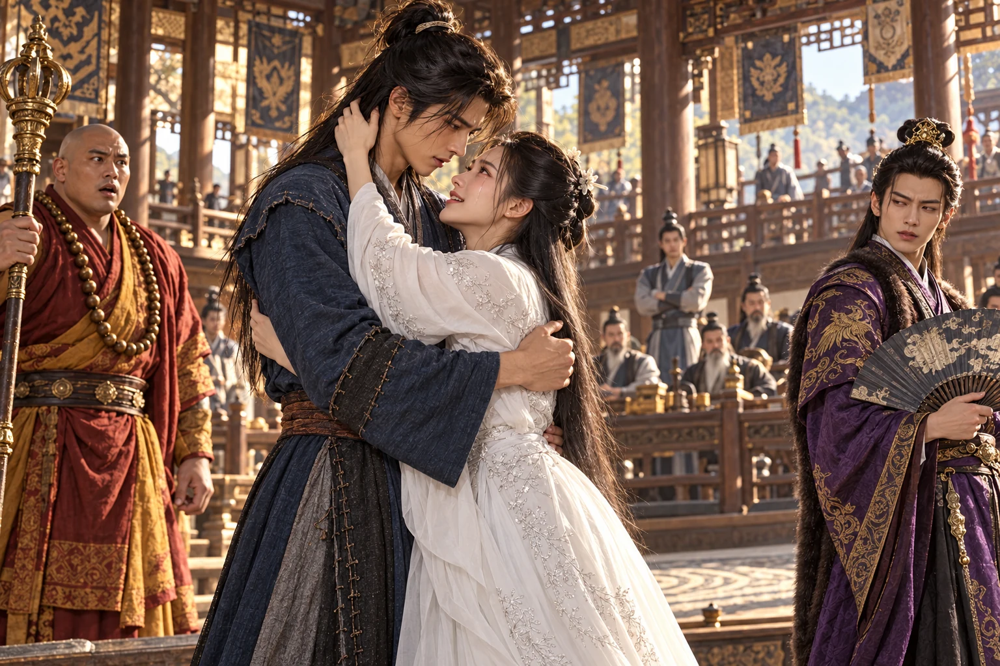
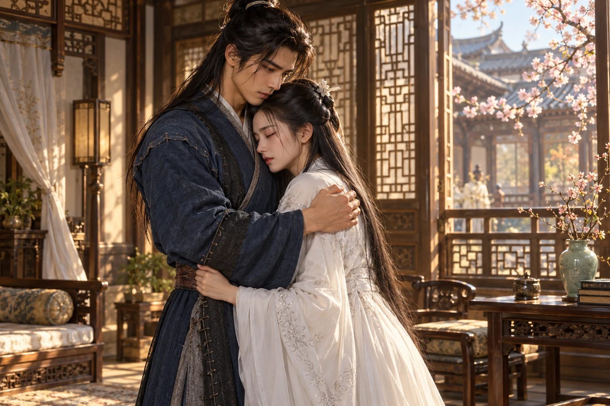
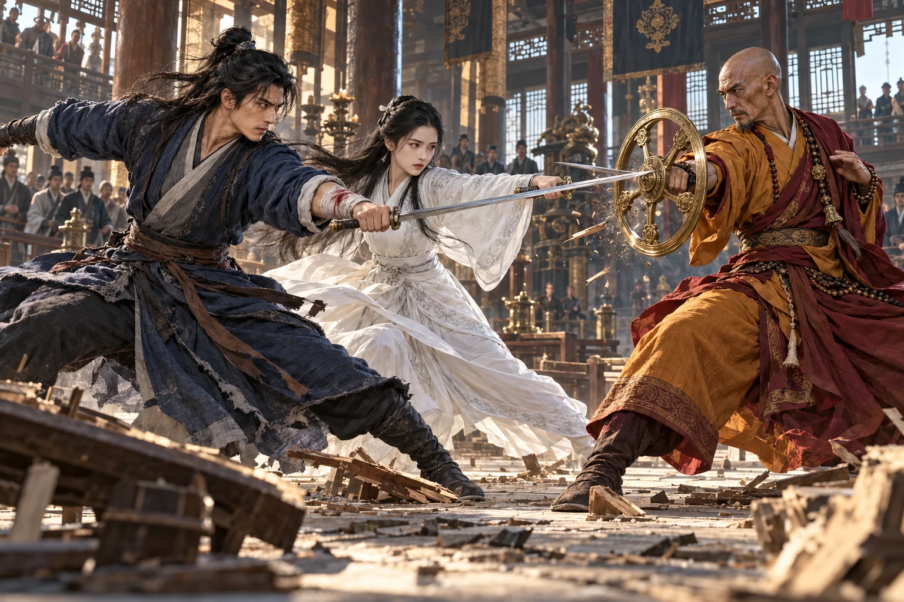
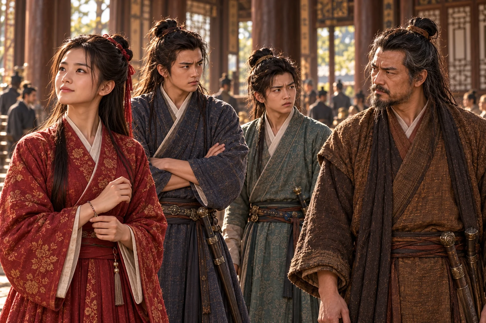
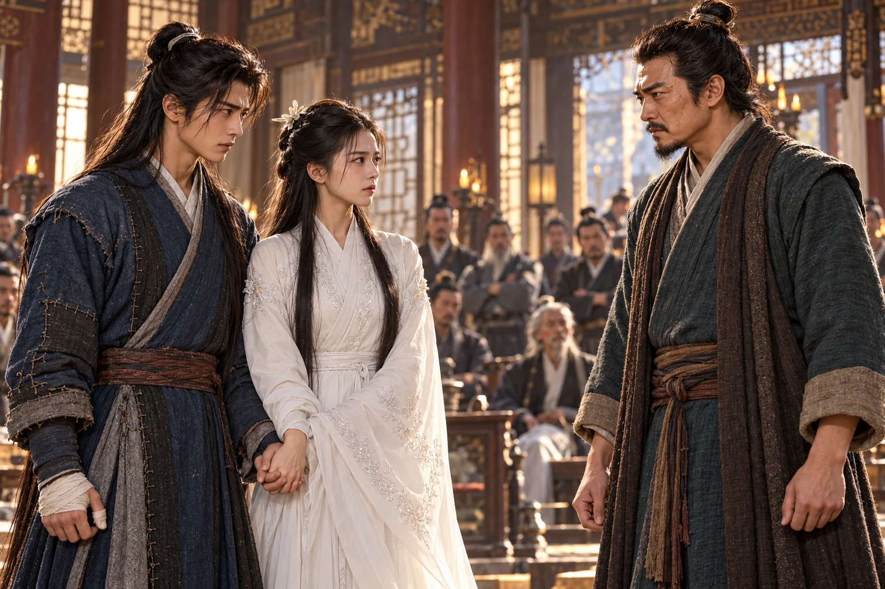

Ketika jalan-jalan kembali kering, telah berusia sembilan belas tahun. Luka tangannya menutup; duka dari Huashan ikut turun bersamanya. Ia mencari melalui kedai, persimpangan, dan rombongan pengelana, sampai kabar Pertemuan Pahlawan membawanya ke kediaman Lu Guanying. Begitu banyak orang berkumpul di sana. Barangkali seseorang pernah melihatnya.
, tuan rumah pertemuan, menyambut perguruan-perguruan yang memenuhi halaman. Atas ajakan dan , mereka datang untuk menghimpun perlawanan terhadap pasukan Mongol. Dani masuk bersama pengemis, berwajah kotor, membawa tongkat latihan. Di bawah kain luarnya, jubah biru bersambung masih menyimpan jahitan Xiaolongnü.
Ia hampir melewati serambi ketika melihat duduk di sebelah . menerima penghormatan beberapa tamu di hadapan mereka.
“Tetua Qiu,” sapa Dani sambil merapatkan kedua tangan, “apakah murid sekarang sudah memperoleh pelajaran gerak, atau masih harus mencari sendiri cara menyelamatkan nyawanya?”
Zhao berdiri. “Pengemis kurang ajar! Siapa yang menyuruhmu mengacau?”
Dani mengangkat wajah. Zhen mengenalinya lebih dahulu; jemarinya mengencang pada cawan. Luka pergelangannya telah sembuh, tetapi ingatan ketika Dani memaksanya meninggalkan gubuk belum pernah reda.
“Engkau masih hendak mencemarkan perguruan?” desis Zhao setelah mengenali mata itu. Tangannya menyambar bahu Dani.
Dani menggeser tubuh. Bangku terseret, cawan pecah, dan Qiu Chuji menghentakkan tongkatnya.
“Cukup! Dani, jelaskan maksudmu.”
“Dia akan menjelaskannya kepada saya juga.”
Guo Jing telah berdiri di pintu. Ia menatap pemuda berdebu itu, lalu memegang kedua bahunya. Kemarahan di wajahnya berubah menjadi kelegaan yang hampir menyakitkan.
“Mengapa baru sekarang engkau pulang?”
Dani hendak membungkuk, tetapi Guo Jing menariknya dekat. Selama beberapa detik, segala jawaban tajam yang disiapkannya menghilang.
“Paman Guo, aku sudah lama tidak tinggal di .”
Guo Jing menoleh kepada para pendeta. “Saya menitipkan seorang anak untuk dididik. Sekarang saya meminta penjelasan.”
Zhao mencoba mendahulukan kesalahan . Qiu Chuji memotongnya dan mengakui pengajaran yang ditahan, perkelahian para murid, serta kematian . Ia tidak melemparkan seluruh tanggung jawab kepada muridnya sendiri.
“Aku gagal menjaga amanatmu,” katanya kepada . Kepada Dani ia menundukkan kepala. “Permintaan maaf tidak menghidupkan Nenek Sun. Namun kesalahan itu tetap harus kuakui.”
Atas perintah Qiu, Zhao meminta maaf dengan rahang terkunci. Zhen ikut memberi hormat; ia hanya membicarakan perkara perguruan. Tidak sepatah pun tentang niat kejinya di gubuk.
“Saya mendengar permintaan maaf Tetua,” kata Dani kepada Qiu. “Tetapi Nenek Sun mati ketika hendak membawa saya pergi. Jangan kelak dikatakan bahwa semuanya hanya perkara seorang murid yang tidak tahu berterima kasih.”
Guo Jing mengangguk sebelum Qiu menjawab. “Perkara itu tidak akan ditutup dengan menuntutnya diam. Saya sendiri akan datang ke Zhongnan sesudah urusan di sini selesai.”
Guo Jing menahan amarah sampai para tamu menjauh. Ia mendengarkan bagaimana menerima Dani, lalu berkata, “Aku berutang terima kasih kepadanya. Engkau tinggal di sini malam ini. Sesudah pertemuan, kita bicarakan semuanya.”
datang bersama adiknya. Gadis tujuh belas tahun itu memandang pakaian Dani dengan kerutan yang dikenalnya sejak kecil, lalu menyodorkan saputangan tanpa menatap wajahnya.
“Bersihkan dahulu mukamu. Di kedai dahulu kau pergi begitu saja; sekarang malah datang seperti pengemis. Apa susahnya menyebut nama Ayah di gerbang?”
“Kalau kusebut namamu, barangkali aku justru disuruh menunggu di luar,” jawab Dani.
Guo Fu menarik kembali saputangannya, tetapi berhenti ketika Dani hendak menerimanya. “Siapa bilang? Asal kau tidak membuatku marah. Dan jangan pergi lagi sebelum makan.”
yang berusia sepuluh tahun mengintip dari belakang kakaknya. Dani mengusap debu dari hidungnya sendiri sebelum menyambut mereka. Untuk malam itu, ia menerima tempat di rumah orang.
Keesokan paginya Guo Fu meletakkan semangkuk masakan di depan Dani. Ketika Dani mengulurkan tangan ke hidangan lain, ujung sumpitnya segera mengetuk mangkuk itu.
“Yang ini dahulu. Aku sudah menyuruh dapur menyiapkan bahan sejak pagi.”
Dani mencicipi, lalu mengangkat alis. “Rupanya dapur keluarga Guo sekarang mempunyai seorang juru masak yang galak.”
“Kalau tidak suka, jangan dimakan.” Guo Fu hendak mengambil mangkuknya, tetapi sudah menariknya mendekat.
“Aku belum mengatakan tidak suka.”
Sudut bibir Guo Fu bergerak sebelum ia menyembunyikannya. Ia bercerita bahwa ibunya akan mengajari , calon ketua , di tepi sungai. “Ikutlah denganku. Jangan membuatku mencarimu ke seluruh halaman lagi.”
“Pergilah dahulu. Aku segera menyusul,” kata Dani. Ia baru melihat mengikuti adiknya ke belakang rumpun bambu, keduanya membawa pedang terhunus.
Di sana, Dunru menghadang adiknya. “Engkau tahu aku hendak mengantarkan Fu ke sungai. Mengapa masih mendahuluiku?”
“Apakah setiap kali ia memanggil, aku harus bertanya dahulu kepada Kakak?” menepis bilah yang menghalangi jalannya. “Aku sudah cukup sering mengalah. Untuk perkara ini, jangan suruh aku mundur lagi.”
“Jadi engkau hendak melawanku demi dia?”
“Kakak sendiri yang mencabut pedang!”
Besi beradu. Dunru hendak menekan, Xiuwen membalas terlalu jauh, dan amarah segera melampaui maksud semula. Ketika Dani tiba, ujung pedang telah mengarah ke tenggorokan saudara sendiri.
“Hentikan!” bentak seorang lelaki dari jalan kebun. , ayah mereka, berlari mendekat. “Kalian hendak membuatku mengubur seorang anak di tangan anakku yang lain?”
Kedua pedang goyah, belum turun. Dani menyela sebelum harga diri memancing serangan berikutnya.
“ sudah merestui aku menikahi putrinya. Kalian hendak memperebutkan keputusan yang bukan milik kalian?”
Wajah kedua bersaudara itu memucat. Wu Santong memisahkan mereka ketika perhatian mereka pecah. “Kalian masih mengingat aku sebagai ayah? Sarungkan pedang sebelum kupatahkan sendiri!”
“Guru tidak pernah mengatakan itu kepada kami,” kata Dunru, masih menatap Dani. Xiuwen menggenggam gagangnya, tak lagi mengarahkannya kepada kakaknya.
“Kalau benar, mengapa Fu tidak berkata apa-apa?” tuntut Xiuwen.
“Tanyakan nanti, sesudah kalian berhenti hendak saling membunuh.” membantu Wu Santong menarik mereka berjauhan. Ketika kedua bersaudara itu membungkuk mengambil sarung pedang, ia berbisik kepada sang ayah, “Aku berdusta untuk menghentikan mereka, Paman Wu. Tolong jangan biarkan ucapan itu menjadi kabar pernikahan.”
Wu Santong menatapnya tajam. “Engkau memadamkan api dengan minyak. Sekarang biar aku menjaga kedua anak bodoh ini.”
menunggu di jalan sungai. “Katamu segera menyusul. Mereka berdua menahanmu lagi?”
“Mereka sibuk memperebutkan tempat di dekatmu. Kalau kau memilih salah seorang, rupanya aku harus berdiri paling belakang.”
“Siapa yang menyuruhmu berdiri di belakang?” Guo Fu menunduk, merapikan ujung lengan bajunya. “Kau sendiri yang selalu pergi sebelum orang sempat bicara.”
Dani melihat pipi Guo Fu yang memerah dan baru menyadari betapa mudah gurauannya menyalakan harapan. Sebagian dirinya masih senang telah membuat gadis yang galak itu menunduk malu. Namun bayangan segera menyela; ia menggaruk belakang kepala, mencari jalan keluar yang tidak membuat Fu merasa dipermalukan.
“Fu, jangan terlalu percaya pada mulutku. Kadang ia berjalan lebih cepat daripada pikiranku.”
“Siapa pula yang menunggumu berjanji?” Guo Fu segera mengangkat dagu. “Aku hanya mengajakmu melihat Ibu mengajar. Jangan berbesar kepala.”
Senyum Guo Fu menipis. Dari balik pohon, suara Guo Jing memotong kesempatan mereka meneruskan percakapan.
“Fu sudah besar. Dani pun telah kembali. Jika mereka bersedia, aku ingin kedua keluarga kita menjadi satu.”
menjawab, “Tanyakan dahulu kepada anaknya. Pulang ke rumah belum tentu berarti datang untuk menikah.”
Guo Fu berhenti dengan pipi memerah. Ketika Wu bersaudara menyusul, ia menyuruh mereka diam dengan tatapan. mengatupkan rahang; memandang Dani seolah kebohongan tadi telah memperoleh bukti. Keduanya tidak mendengar adanya keputusan, tetapi ketakutan kehilangan Fu membuat kemungkinan terdengar seperti kepastian.
Di tepi air, mengulang putaran tongkat di bawah petunjuk Huang Rong. Dani mengenali bentuk yang dipelajarinya di Huashan. Ia mendengarkan satu koreksi tentang perpindahan berat tubuh sebelum Huang Rong menoleh tepat ke tempat mereka berdiri.
“Fu, bawalah dua pengiring yang baru datang itu kembali. Dani tinggal.”
“Mengapa hanya yang boleh tinggal?” tanya Guo Fu.
“Karena Ibu hendak bertanya kepadanya, bukan kepada ketiga orang yang bersembunyi di belakangnya.” Huang Rong memandang kedua Wu sampai mereka menunduk. Guo Fu berbalik dengan langkah keras; ia kesal karena Dani tidak tampak keberatan ditinggalkannya. Sesudah mereka pergi, Huang Rong menyuruh Lu Youjiao melanjutkan latihan agak jauh.
“Kakimu bergerak ketika aku membetulkan tongkatnya,” ujar Huang Rong. “Siapa yang mengajarimu?”
“. Di Huashan.”
Dani menyampaikan kabar kematian dua tetua tanpa menyembunyikan siapa yang dimakamkannya. Huang Rong diam begitu lama sehingga ia mendengar gesekan bambu Lu Youjiao dari hilir.
“Apakah Guru menderita?” tanyanya akhirnya.
“Pada akhirnya beliau tersenyum. Mereka saling mengenali sebelum pergi.”
Huang Rong menutup mata. Setelah mampu bicara, ia menanyakan kehidupan Dani sejak meninggalkan . Dani menceritakan makam, pelajaran, dan pencariannya; malam di gubuk tetap menjadi perkara yang harus ia bicarakan dengan sendiri.
Ketika bangkit, Huang Rong mendadak kehilangan keseimbangan. Dani menangkap sikunya, membantunya duduk di batu datar, lalu mengambil air tanpa berteriak memanggil semua orang.
“Bibi, biar kupanggil .”
“Sebentar. Ini sudah pernah terjadi.” menerima cawan. “Fu dan Xiang akan mendapat adik.”
Dani mengendurkan pegangan setelah memastikan ia dapat duduk sendiri. Huang Rong memperhatikan pemuda yang menunggu tanpa pertanyaan usil itu. Kecurigaannya selama bertahun-tahun terasa memalukan di hadapan pertolongan sesederhana ini.
“Nanti ceritakan lagi tentang Guru,” katanya. “Kali ini sebagai orang rumah.”
Menjelang tengah hari, rombongan berjubah asing memasuki aula. Dani mengenali dan dari penyerbuan Zhongnan dahulu. Mereka tidak mengenal pemuda yang ketika itu berlindung di sisi tangga.
Di belakang keduanya berjalan , guru mereka, bertubuh tinggi dengan tatapan tenang. Huodu mengusulkannya sebagai pemimpin persilatan. Pertemuan yang hendak menyatukan perlawanan terhadap Mongol tiba-tiba dituntut tunduk kepada guru yang datang mewakili kekuasaan itu.
Tiga pertandingan diajukan; dua kemenangan menentukan hasil. , pendekar terpelajar dari lingkungan Yideng, maju menghadapi Huodu. Saat sapuan kipas pertama membelah udara, kain putih bergerak di atas serambi.
Xiaolongnü menapak bubungan, menolak genting dengan ujung kaki, lalu turun ke halaman. membuat setiap tolakannya nyaris luput dari mata. Usianya kini dua puluh satu, tetapi ketenangan wajahnya membuat perjalanan panjang itu seolah tak pernah terjadi.
menjatuhkan tongkat latihannya.
“Bibi!”
Ia berlari dan memeluknya sebelum sempat memikirkan puluhan pasang mata. Xiaolongnü memegang punggungnya erat-erat. Jemarinya menemukan sambungan jubah yang pernah dijahitnya, lalu naik ke tengkuk Dani.

berdiri setengah bangkit. “Dani! Ayah sedang—” Panggilannya berhenti ketika melihat tangan perempuan itu di tengkuk Dani.
mendekat. “Bukankah itu gurunya? Kalau begitu, perkara tadi…”
“Aku mempunyai mata,” potong Guo Fu. Ia duduk kembali sebelum ada yang melihat wajahnya dengan jelas. menarik lengan adiknya supaya diam. Mereka sama-sama ingin percaya bahwa kemesraan itu tidak berarti apa-apa, tetapi belum pernah melihat Dani menyambut siapa pun seperti itu.
“Engkau benar-benar datang,” katanya. “Aku mendengar banyak pendekar berkumpul. Aku berharap engkau ada di antara mereka.”
Dani tidak sanggup segera menjawab. Ia mengangguk di dekat rambutnya.
Seorang pelayan menunjukkan ruang tamu kecil di sisi aula. Dani menutup pintunya tanpa menyelak. Baru setelah suara keramaian meredup, mundur sedikit untuk melihat wajahnya.
“Dani, engkau benar-benar mencariku?” Xiaolongnü memeriksa wajahnya seolah jawaban itu dapat ditemukan di sana. “Aku menunggu di banyak tempat. Kupikir engkau sudah tidak mau bertemu.”
Ia mengucapkannya lembut, tetapi tangannya gemetar. Dani menutup tangan itu dengan kedua telapaknya.
“Kalau tidak mencarimu, untuk apa aku berkeliling sampai seperti pengemis begini?” Dani tersenyum, lalu menggenggam tangannya lebih erat. “Bibi, waktu itu aku bodoh. Aku mencintaimu. Aku ingin engkau menjadi istriku. Sekarang sudah jelas? Atau harus kuucapkan sekali lagi?”
Xiaolongnü menatapnya tanpa berkedip.
“Sekali lagi,” jawab Xiaolongnü segera. Ia tidak menangkap tawarannya sebagai gurauan. “Aku ingin mendengarnya.”
“Aku ingin menikah denganmu.” Kali ini mengucapkannya tanpa senyum. “Malam itu membuatku tidak ingat dengan jelas. Tetapi ini kukatakan dengan kepala terang. Jangan ragu lagi kepadaku, Bibi.”
“Aku mengira engkau mengerti mengapa aku menyerahkan diri kepadamu,” katanya. “Ketika engkau tetap menyuruhku menjadi bibimu, kupikir engkau tidak menginginkan aku sebagai istri.”
“Aku salah karena membiarkanmu pergi membawa pikiran itu. Aku ingin hidup bersamamu, sekalipun malam tersebut tidak pernah terjadi.”
Xiaolongnü meraba sambungan kain di pinggangnya. Benang yang dahulu ditariknya di bawah cahaya pelita masih bertahan, meskipun warna kain telah pudar oleh hujan dan perjalanan.
“Aku takut engkau membuangnya,” katanya.
“Jubah ini?” Dani menunduk mengikuti tangannya. “Kau susah payah membesarkannya untukku. Kalau kusut sedikit, apakah harus kutinggalkan?”
“Bukan hanya jubahnya. Semua yang kita lakukan di gubuk.”
Dani menahan jarinya agar tidak menjauh. “Aku masih menyimpan jarum Ibu. Setiap kali membukanya, aku teringat kau duduk menjahit sambil menyuruhku jangan bergerak. Aku ingin mengalami hari seperti itu lagi. Makan bersamamu, mencari kayu, mendengar kau memanggilku pulang.”
“Kalau engkau pergi mencari kayu terlalu lama, aku tetap akan menyusul,” ujar . Air mata belum kering di pipinya, tetapi senyumnya kembali. “Jadi jangan sengaja bersembunyi supaya aku mencarimu.”
Air mata menggenang di mata Xiaolongnü. Kehilangan keperawanan telah dipahaminya sebagai ikatan yang tak dapat dipisahkan dari kesetiaan; ia juga telah menanggung takut bahwa ikatan itu hanya diakuinya seorang diri. Kini Dani menyatakan pilihannya dengan sadar, tanpa berlindung di balik sapaan lama.
“Kalau orang-orang di luar bertanya, katakan juga begitu,” ujarnya, masih memegang bajunya. “Aku senang sekali mendengarnya. Mengapa mereka tidak boleh tahu?”
Dani mengecup punggung jarinya. “Aku tidak akan menyembunyikanmu.”
Xiaolongnü menyentuhkan dahi ke dadanya. Dani merengkuh bahunya; kali ini ia membiarkan keheningan menjadi tempat beristirahat sesudah jawaban diberikan. Di luar, bunyi benturan terdengar semakin keras.

Sebuah hantaman mengguncang daun pintu. Ketika mereka keluar, sedang dirawat akibat senjata beracun , sedangkan senjata , sesama murid Yideng, telah dipatahkan gada . Huodu mengumumkan dua kemenangan di tengah protes para tamu.
“Kemenangan dengan racun pun hendak kaubawa ke kursi pemimpin?” tanya . “Kursinya belum kauperoleh, tetapi kau sudah mengotori rumah tuan rumah.”
Huodu mengibaskan kipas. “Jika gurumu keberatan, suruh dia mengirim muridnya.”
“Muridnya sudah berdiri di sini.” Dani menunjuk Xiaolongnü. “Dua pertandingan lagi. Jika aku menang, akuilah guruku. Jangan sembunyikan gurumu di belakang keberhasilan muridnya, lalu menolak aturan yang sama bagi orang lain.”
memberi anggukan singkat. Ia memperkirakan perlawanan pemuda itu akan berakhir cepat.
Huodu menyerang tanpa menunggu ejekan berikutnya. Dani mengambil tongkat kayunya dari dekat tiang. Benturan pertama membuat telapaknya panas; ia mengubah sudut, membelit arah kipas, tetapi terlambat menarik ujung kayu dari tekanan lawan.
mendekati batas arena dan menyodorkan tongkat bambu hijau.
“Untuk memukul anjing, pakailah tongkat yang sesuai. Ini pinjaman; kembalikan kepada setelah selesai.” Suaranya merendah. “Paksa dia menyerahkan penawar untuk Tuan Zhu.”
Dani menyerahkan kayu latihannya kepada pelayan, menerima tongkat itu, lalu kembali menghadapi . terasa lebih lentur dan seimbang; keluwesan bendanya membantu, tetapi tidak menambah pemakainya.
Huodu menekan dengan pukulan telapak. Dani mengalah setapak, mengubah putaran sebelum ujung bambu terjepit. Huang Rong menahan napas ketika koreksi sederhana yang diberikannya di sungai muncul pada saat yang tepat. Ia sudah mengetahui siapa gurunya; kini ia melihat betapa cepat pelajaran itu bekerja di tangan Dani.
“Dari mana dia memperoleh ilmu Guru?” bergumam.
“Nanti kuceritakan,” jawab Huang Rong, matanya tetap mengikuti arena.
Huodu mengubah cara. Ejekan di bibirnya lenyap; kipas tertutup menjadi batang besi pendek yang memburu tangan Dani. Ia sengaja membiarkan sisi tubuhnya tampak terbuka. Dani hampir mengambil umpan itu sebelum melihat telapak kiri lawan menunggu di bawah lengan.
Jangan memaksa jalan yang ditutupnya. Suara Hong teringat bersama lereng salju. Dani menarik kaki lebih dahulu; ujung kipas lewat dekat tulang pipinya. Tiupan anginnya begitu tajam hingga matanya berair.
“Guru yang mengajarimu tentu kecewa melihat muridnya hanya berlari,” kata .
“Beliau lebih kecewa jika aku mati karena menuruti nasihatmu.”
menahan napas yang mulai memburu. Di belakang Huodu, telah bergeser untuk melihat tangan kiri penyerangnya. Dani mengenal gerakan itu: ia siap masuk bila keadaan benar-benar tak dapat diselamatkan. Ia harus menyelesaikan laga sebelum kekhawatirannya memecah perhatian mereka berdua.
Dani tidak mencoba menahan pukulan berikutnya. Ia membiarkan Huodu mengejar, mengusik pergelangan, kemudian menyapu ketika kipas ditarik terlalu jauh. Lutut Huodu membentur lantai. Sebelum ia bangkit, ujung bambu berhenti di lekuk tenggorokannya.
“Penawarnya,” kata Dani, terengah. “ tidak mempunyai waktu untuk mendengar alasanmu.”
Huodu mengeluarkan botol setelah memerintahkannya. Dani menunggu Huang Rong memeriksa isinya sebelum mundur. Bahunya berdenyut; sekali saja tadi ia memaksakan benturan, hasilnya dapat terbalik.
maju membawa . Dani mengembalikan tongkat hijau dan meminjam pedang dari . Pedang itu senjata biasa; pedangnya sendiri masih berada di jalur air bawah makam.
Ucapan Daerba tidak dipahaminya. Dani menirukan beberapa bunyinya sambil menggeser kaki. Bagi Daerba, pengulangan itu terdengar seperti teguran aneh dari seorang yang mengenalnya. Keyakinan tentang kelahiran kembali membuatnya mulai menghubungkan pemuda ini dengan kakak seperguruannya yang telah wafat.
Keraguan itu memberi Dani ruang, bukan kemenangan mudah. Gada menghantam lantai ketika ia menghindar; pecahan ubin menggores betisnya. Ia mencoba menuntun senjata berat itu ke samping, namun bilah pinjamannya bertemu gada dan patah. Dani terhuyung dengan pangkal ibu jari berdarah.
Daerba berhenti menyerang. Ia membungkuk sambil berbicara cepat. Guo Jing, yang memahami bahasanya, berseru bahwa Daerba menganggap Dani sebagai kakak seperguruannya yang lahir kembali.
Jika dia menyerang lagi, aku tak dapat menahannya, pikir Dani. Ia menjatuhkan potongan pedang, mengangkat telapak, lalu memberi isyarat agar gada diturunkan.
Jinlun membentak muridnya. Daerba memandang guru dan pemuda itu bergantian, akhirnya meletakkan gada serta menyatakan mengalah. Kekalahannya lahir dari keyakinan yang keliru; tenaga dan senjatanya belum ditundukkan.
Dani memberi hormat. Ia tidak menertawakan orang yang baru saja membiarkannya hidup.
Huodu hendak membantah hasil itu. Jinlun mengangkat tangan, menghentikannya, lalu melangkah sendiri ke tengah aula.
“Kecerdikan murid telah kulihat. Sekarang aku meminta petunjuk gurunya.”
Xiaolongnü berdiri di depan Dani. “Tanganmu terluka. Biar aku menghadapinya.”
membentur pedangnya. Getarannya membuat lengan turun; serangan berikutnya menyambar sebelum ia sempat memulihkan jarak. mengambil pedang kedua yang disodorkan Lu Guanying dan masuk dari samping.
“Bibi, sebelah kirimu.”
Ia memakai dasar pedang , sementara Xiaolongnü mengisi sela dengan Ilmu Pedang . Latihan mereka di makam menemukan tujuan yang dahulu belum sepenuhnya dipahami: seorang membuka jalan, seorang lagi menutup bahaya yang mengancam pasangannya.
Dua ujung pedang mengapit roda Jinlun. Xiaolongnü memutar mengikuti bahu Dani, bukan mendahuluinya; Dani menahan dorongan untuk mengejar leher lawan karena langkah itu akan membiarkan rusuknya terbuka. hidup dalam kesediaan mereka menjaga satu sama lain.

“Jangan mengepalkan tangan terlalu keras,” bisik Xiaolongnü ketika punggung mereka hampir bersentuhan. Ia melihat darah meresap pada gagang Dani.
“Aku masih dapat memegangnya.”
“Aku tahu. Tetapi sesudah ini tangan itu masih kupakai untuk menggenggam.”
Dani melonggarkan jari sedikit. Perubahan kecil itu menyelamatkan pergelangannya ketika roda berikutnya menggesek bilah; ia membiarkan benturan mengalir keluar, sementara pedang Xiaolongnü memaksa menarik siku dari jalur serangan.
Jinlun mundur tiga langkah. Ketika roda berbalik, ujungnya merobek tiang kayu. Mereka belum melampaui tenaga dalamnya; kedua pedang hanya mempersulitnya menghimpun serangan penuh. Begitu Jinlun memaksa mereka terpisah mengitari bangku patah, celah itu terbuka.
Dani melihat telapak lawan menuju dada Xiaolongnü. Ia menyusul, terlalu jauh untuk menutup jarak.
masuk di antara serangan itu dan Xiaolongnü. menyambut dorongan Jinlun dengan benturan yang mengguncang lantai. Jinlun telah membagi tenaga antara roda dan telapak; darah merembes di sudut bibirnya ketika ia mundur. Guo Jing tetap berdiri, tetapi lengan bajunya bergetar setelah benturan.
“Cukup,” kata Guo Jing. “Pertandingan bukan izin membunuh tamu kami.”
Jinlun menilai kedua pedang yang kembali berdampingan dan Guo Jing di hadapannya. Ia menahan luka serta amarah, kemudian meninggalkan aula bersama murid-muridnya.
Seruan kemenangan menyebut Xiaolongnü sebagai pemimpin persilatan, menagih janji pertandingan yang disaksikan bersama. Para pengurus segera mendekatinya; Xiaolongnü justru mencari kain untuk tangan Dani. Gelar itu diterimanya sebagai hasil laga, tanpa pemahaman tentang segala urusan yang hendak dibebankan kepadanya.
Sesudah orang terluka dipindahkan, mengembalikan pedang pinjaman. Guo Jing memanggilnya mendekat. Kebanggaan masih tampak pada wajah lelaki itu; di hadapan para sahabatnya, ia mengemukakan keinginan menyatukan Dani dan dalam pernikahan.
“Paman sudah mengenal ayahmu sejak muda. Melihat kalian tumbuh bersama tentu membahagiakan kami. Tetapi katakan dahulu isi hatimu.”
Guo Fu melirik Dani, lalu menunduk seolah sedang membetulkan gelang. “Ayah belum bertanya kepadaku.”
“Kalau engkau keberatan, Ayah akan mendengarnya.”
“Aku tidak mengatakan keberatan.” Pipi Guo Fu memerah. Ia kesal karena Dani masih belum menjawab; bukankah pemuda itu sendiri yang menggodanya di jalan sungai?

Dani merapatkan kedua tangan. “Paman, aku tidak dapat menerima.”
Tangan Guo Fu berhenti pada gelangnya.
“Apa maksudmu?” tanya Guo Jing. “Adakah sesuatu yang belum Paman ketahui?”
“Aku sudah berjanji kepada orang lain.” Dani menelan ludah. “Dan ada kebohongan yang harus kubetulkan. Pagi tadi kukatakan kepada kedua Wu bahwa Paman telah merestui pernikahanku dengan Fu. Aku mengatakannya agar mereka berhenti berkelahi. Fu tidak pernah menjanjikan apa pun.”
maju selangkah. “Jadi sejak tadi kau mempermainkan kami?”
“Engkau hampir menikam kakakmu sendiri,” jawab Dani. “Aku berdusta, dan aku mengakuinya. Tetapi jangan berpura-pura seolah pedang kalian tadi hanya dipakai bermain.”
“Cukup,” kata sebelum menyela. “Perkara kalian akan dibicarakan dengan Ayah. Dani belum selesai menjawab.”
Guo Fu tertawa pendek. “Tidak perlu diteruskan. Siapa yang memintanya menjadi suamiku? Ayah terlalu memandang tinggi dirinya.”
Namun suaranya tersangkut pada kata terakhir. Hidangan yang dibawanya pagi tadi, penantian di jalan sungai, bahkan saputangan yang diberikannya kini terasa seperti pertolongan yang dilempar kembali ke wajahnya. Ia lebih rela disebut marah daripada membiarkan mereka melihat betapa besar harapannya.
“Aku bersalah karena membawa namamu, Fu,” kata . “Tetapi menerima pernikahan ini hanya akan membuat kesalahanku lebih besar.”
menatap . “Karena dia? Sejak perempuan itu datang, kau bahkan tak mendengar orang lain memanggil.”
“Aku mencintai Bibi,” jawab Dani. Ia meraih tangan Xiaolongnü. “Aku hendak menikah dengannya.”
Sebuah cawan berhenti di tengah jalan menuju bibir pemiliknya. Bisikan menyusul, mula-mula dari serambi, lalu merambat ke meja-meja di dekat mereka. Orang-orang yang baru saja memuji Dani menatapnya dengan wajah berubah.
“Bukankah dia gurumu?” suara terdengar berat.
“Dia guruku, Paman. Dan dia pula orang yang ingin kudampingi seumur hidup.”
Di mata dunia persilatan yang memenuhi aula itu, seorang guru menerima penghormatan seperti orang tua. Ikatan perguruan tidak mereka anggap berakhir hanya karena murid telah dewasa. Karena itulah cinta Dani dan Xiaolongnü dinilai sebagai : bukan karena keduanya sedarah, melainkan karena kedudukan guru dan murid dianggap tak boleh berubah menjadi suami istri. Pengakuan terbuka itu menantang tata susila yang dijunjung para pendekar sebagai ukuran kehormatan.
Seorang tamu di belakang kursi berseru, “Jasa hari ini tidak menghapus pelanggaran terhadap guru!” Yang lain menuntut agar Dani menarik ucapannya. Beberapa orang tetap diam, tetapi pandangan mereka beralih dari wajahnya seolah enggan terlihat membela.
Guo Jing mengangkat tangan meminta mereka tenang. “Dani, jangan salah mengartikan kasih seorang guru. Dia melindungimu ketika kami gagal menjagamu. Seharusnya engkau memuliakannya.”
“Aku memang ingin melindunginya, Paman. Mengapa aku harus berpura-pura tidak mencintainya untuk membuktikan itu?”
“Karena ada batas yang tak boleh kaulangkahi!” Guo Jing menekan suaranya. “Sekali hubungan guru dan murid dijadikan demikian, nama kalian akan dicela ke mana pun pergi. Paman tidak akan membiarkanmu menempuh jalan itu.”
Xiaolongnü memandang orang-orang yang berseru tadi. “Akulah yang ingin menjadi istrinya. Mengapa kalian hanya memarahinya?”
Ketenangannya justru memperbesar kegemparan. Bagi Xiaolongnü, menjawab dengan jujur sudah seharusnya menyelesaikan keraguan mereka. Ia tidak dibesarkan di tengah perguruan-perguruan yang menjadikan penghormatan kepada guru sebagai batas tak terbantahkan bagi cinta.
“Nona Long,” ujar Guo Jing, “budimu kepada anak ini tidak akan kulupakan. Tetapi engkau gurunya. Tidakkah engkau memikirkan akibatnya bagi dia?”
“Aku ingin dia senang,” jawab Xiaolongnü. Ia memandang Guo Jing dengan kebingungan yang jujur. “Tadi dia sedih ketika tidak bersamaku. Sekarang kami sudah bertemu, mengapa Paman hendak memisahkan lagi?”

memalingkan muka. Ia ingin menganggap kedekatan itu sebagai keburukan perempuan asing tersebut, tetapi suara terlalu tenang untuk dijadikan kebohongan. Di belakangnya, berbisik bahwa tak pantas diberi hati. Fu segera membentak, “Siapa yang memberinya hati? Jaga ucapanmu!”
mendengus. “Murid murtad. Jadi itulah yang kaupelajari setelah lari dari . Perguruan mana yang mengajari muridnya merayu guru sendiri?”
“Jaga mulutmu,” kata Dani. “Engkau boleh membenciku. Jangan seret Bibi ke dalam dendammu.”
Zhen memandang tangan mereka dengan wajah pucat. Ia pernah hendak memanfaatkan Xiaolongnü yang tak berdaya, tetapi kini berdiri di antara orang-orang yang merasa berhak mengadili perempuan itu. Obsesinya berubah menjadi dengki; celaan tentang kesusilaan memberinya tempat untuk bersembunyi.
“Pengakuan seperti ini mencemarkan seluruh perguruan,” katanya.
Dani menatapnya. “Engkau paling tahu mengapa engkau seharusnya diam.” Ia tidak akan mengumbar perkara gubuk untuk memenangi pertengkaran. Xiaolongnü bukan barang bukti yang boleh diserahkannya kepada rasa ingin tahu orang ramai.
Zhao mencabut pedang ketika Dani bergerak mendekat. Dani menghindari ujungnya, masuk pada pergantian langkah yang dikenalnya dari latihan , lalu menghantam pergelangan. Zhao masih sempat menyikut bahunya. Rasa sakit membuat mata Dani berair, tetapi ia memutar gagang sampai pedang jatuh. Tinju Dani berikutnya terhenti di dalam cengkeraman .
“Di hadapan para tetua, engkau masih hendak memukul bekas gurumu?”
“Aku akan berhenti memukul, Paman.” Napas Dani memburu. “Tetapi aku tidak akan menyangkal cintaku hanya agar mereka berhenti menghina.”
Guo Jing melepaskan pergelangan itu. “Engkau masih tidak mau mengaku salah?”
“Kalau mencintai Bibi suatu kesalahan, katakan siapa yang sudah kusakiti!” Dani menyapu wajah-wajah di sekelilingnya. “Aku tidak merebut istri siapa pun. Kami saling menyayangi. Mengapa semua orang merasa harus lebih berhak menentukan daripada kami sendiri?”
“Dani!” Guo Jing menyambar kerahnya. Xiaolongnü bergerak, tetapi sapuan lengan pendekar itu menutup jalannya. Tangan kirinya terangkat di atas kepala Dani.
Aula mendadak sunyi. Telapak yang baru saja melukai kini menggantung begitu dekat. Satu pukulan sungguh-sungguh cukup untuk mengakhiri perdebatan itu bersama nyawa pemuda yang dicekalnya.
Dani dapat merasakan kain menekan lehernya. Kakinya tidak mundur. Paman mengira sedang menyelamatkanku. Kalau aku berbohong sekarang, Bibi akan ditinggalkan sekali lagi. Ia menatap lelaki yang pernah menggenggam bahunya dan menyebutnya keluarga.
“Paman boleh menghukumku karena kebohongan tadi,” katanya. “Tetapi jangan minta aku berjanji meninggalkannya. Janji itu akan kulanggar, sekalipun keluar dari mulutku sekarang.”
“Aku memandangmu sebagai anakku sendiri.” Suara Guo Jing bergetar oleh amarah dan kepedihan. “Justru karena itu aku tak sanggup melihatmu merusak hidupmu dengan keras kepala.”
sudah kembali ke sisi . Ia tidak mencabut pedang; ia memegang lengan yang mencengkeram kerah pemuda itu dan mendongak kepada Guo Jing.
“Jangan pukul Dani.” Xiaolongnü memegang lengan Guo Jing erat-erat. “Aku yang ingin menjadi istrinya. Kalau itu membuat Paman marah, marahilah aku juga.”
menyentuh lengan suaminya. “Kakanda Jing, lihat siapa yang ada di hadapanmu.”
Guo Jing menatap Dani. Di balik rahang yang mengeras itu masih ada anak yang dahulu menanyakan apakah ia akan ditemani sampai pintu perguruan. Anak itu pernah takut dibuang; sekarang justru ia sendiri yang membuatnya berdiri menunggu hukuman di tengah ratusan orang. Kemarahannya belum padam, tetapi kasih yang melahirkannya membuat tangan itu tak sanggup turun.
Ia mengendurkan cengkeraman. Telapak kirinya perlahan jatuh ke sisi tubuh tanpa memukul.
“Pikirkan lagi,” ucap . “Paman tidak dapat merestuimu.”
Dani merapikan kerah dengan tangan gemetar, lalu membungkuk dalam-dalam. “Budi Paman dan Bibi Guo tidak akan kulupakan. Tetapi untuk perkara ini, aku tidak dapat menurut.”
Guo Jing berbalik sebelum pemuda itu tegak kembali. Tak seorang pun meneruskan sorak kemenangan. Ada yang memandang pasangan itu dengan jijik, ada yang marah, ada pula yang hanya menghela napas. Mereka baru membela aula yang sama, tetapi tak lagi diberi tempat yang sama di dalamnya.
menatap punggung Dani ketika ia mengambil buntalan serta tongkat latihan. Mulutnya terbuka sedikit, lalu terkatup. Ia tidak akan memanggilnya kembali di hadapan perempuan itu. Bahkan ketika menawarkan untuk mengantarnya keluar, Fu menyentakkan lengan dari sentuhannya.
“Aku bisa berjalan sendiri.”
Di bawah gerbang, Xiaolongnü menyentuh bekas tekanan kerah di leher Dani. “Apakah masih sakit?”
“Akan hilang sebentar lagi, Bibi.” Dani menoleh ke pintu aula yang kini terhalang bahu para tamu. Yang paling melukainya tidak meninggalkan bekas di kulit.
Xiaolongnü menyelipkan jari ke tangannya yang tidak terluka. “Kalau mereka tidak mengizinkan kita tinggal, kita pergi bersama.”
Dani mengangguk. Kali ini tidak ada tangan yang dilepaskannya ketika mereka menuruni jalan.